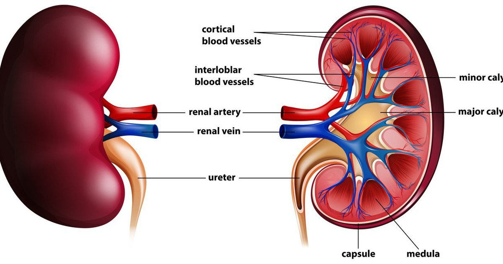

The kidneys 🧃 are two bean-shaped organs 🫘 located in
the lower back 📍 on both sides of the spine 🦴. They play
a vital role in keeping the body clean 🛡️ and balanced ⚖️.
Their main function is to filter waste 🗑️ and harmful
substances ☠️ from the blood 🩸 and convert them into urine
🚽, which is then removed from the body.
Inside each kidney, there are millions of tiny filtering
units 🧬 called nephrons. These nephrons clean the blood 🩸
by removing toxins ☠️, excess salts 🧂, and extra water 💧.
The kidneys also help maintain the balance ⚖️ of fluids 💧,
minerals 🧂, and electrolytes ⚡ in the body, which is
essential for proper muscle 💪 and nerve ⚡ function.
In addition, they regulate blood pressure ❤️ by controlling
the amount of fluid in the body and producing important
hormones 🧪.
The kidneys also help produce red blood cells 🩸 by
releasing a hormone that signals the body to create
more when needed.
All of these processes happen continuously 🔄 and
automatically 🤖, ensuring that the body stays healthy 💚,
clean 🛡️, and in perfect balance ⚡.
